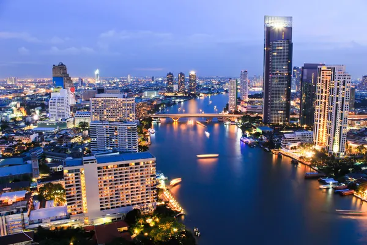

בנגקוק
עיר הבירה התוססת של תאילנד, המשלבת בין מודרניות למסורת.
אטרקציות מרכזיות:
- הארמון המלכותי ומקדש בודהת האזמרגד - מתחם מרהיב של ארכיטקטורה מסורתית
- וואט פו - מקדש הבודהה השוכב המפורסם
- וואט ארון - מקדש השחר המרשים על גדות נהר הצ'או פראיה
- שוק צף דמנון סדואק - חוויה תרבותית ייחודית
מה לעשות?
- סיור בשווקי הלילה המפורסמים כמו שוק צ'טוצ'אק
- שופינג במרכזי הקניות המודרניים כמו סיאם פרגון
- טעימות אוכל רחוב אותנטי בצ'יינה טאון
- הפלגה על נהר הצ'או פראיה בשקיעה